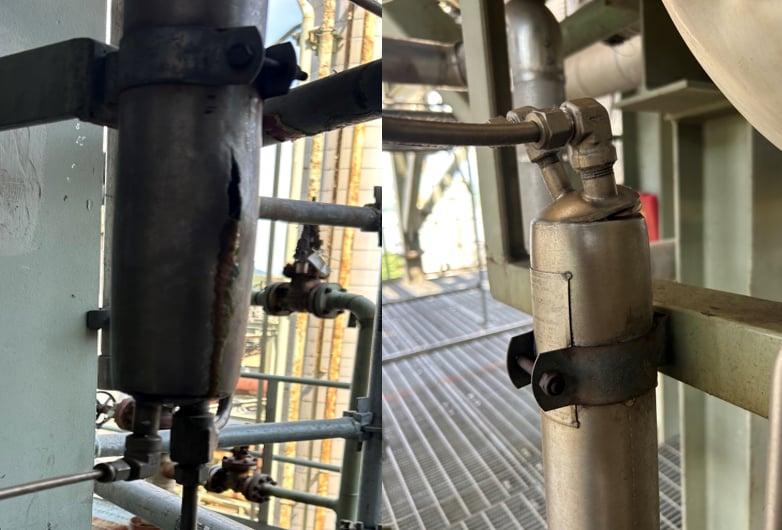
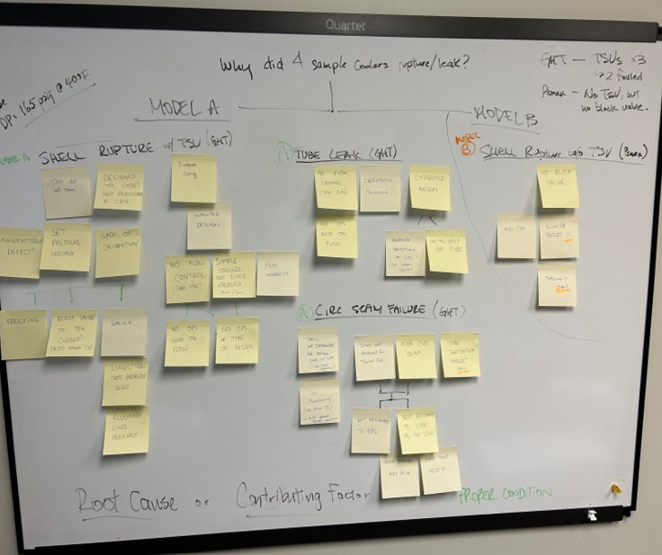

Failed sample coolers at facility with different modes (i.e., cap versus shell rupture).
At Parkland, sample coolers (i.e., shell and coil heat exchangers) are used extensively throughout the facility. However, in just a few months, many of these sample coolers failed. Their failure modes varied from a leaking coil to a ruptured shell to a ruptured seam at the cap. Each sample cooler cost about CA$1,000 and Parkland had over 100 sample coolers.

5 Whys Investigation of Sample Coolers.
Led root cause investigation to figure out failure mode(s) of sample coolers, verify hypotheses, and suggest corrective measures
Gained hands-on experience conducting root cause investigation end-to-end, from diagnosing the problem to suggesting solutions.